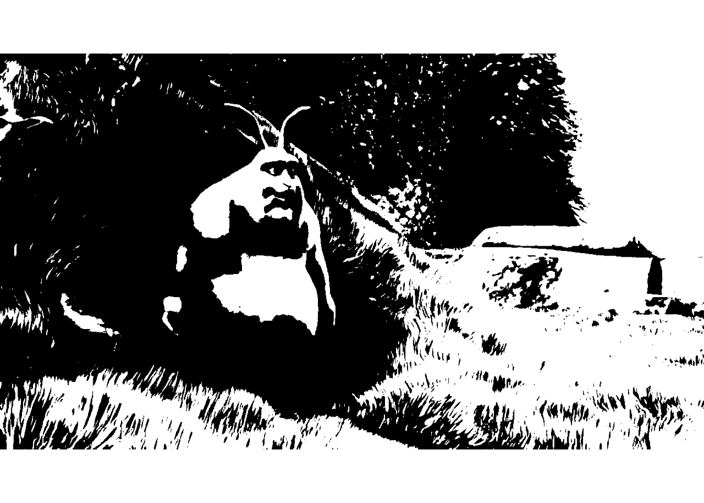
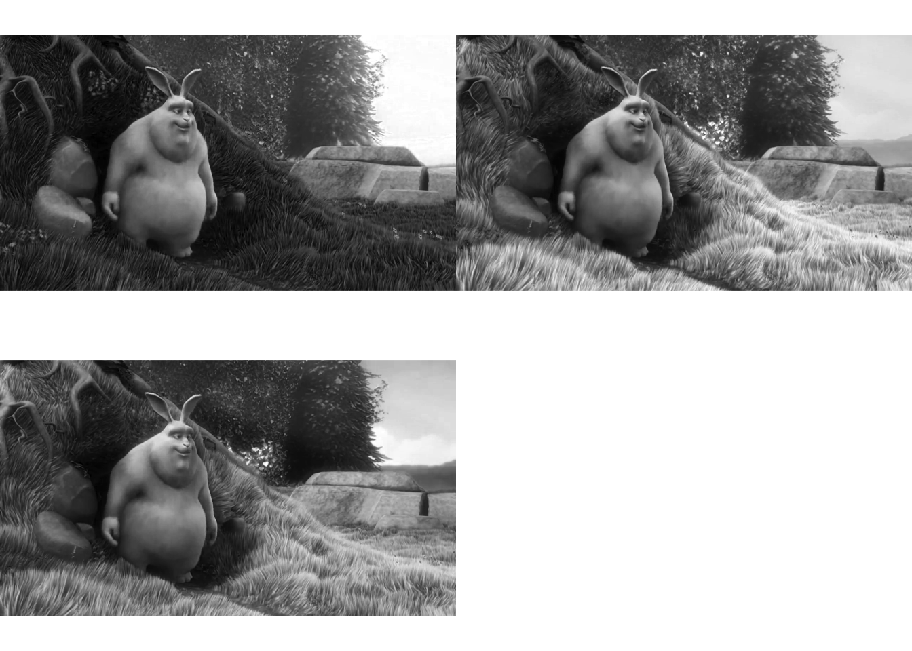

Package installation
Requirements
Before installing Rvision, you will need to install the latest version of the devtools package in R. You can install devtools as follows:
if (!require(devtools))
install.packages("devtools")
Installing Rvision
You can install Rvision as follows:
if (!require(Rvision))
install_github("swarm-lab/Rvision")Rvision depends on ROpenCVLite to access OpenCV’s functionalities. If not already installed, ROpenCVLite will be installed first by the above command line. This may take some time as it will download, compile and install OpenCV for you (compilation time will depend on your computer). I suggest going out for a cup of tea or coffee while ROpenCVLite is installing ;-)
Input/output operations
Video object from video file
my_vid <- video(system.file("sample_vid", "SampleVideo_1080x720_5mb.mp4", package = "Rvision"))
Image object from image file
my_file_img <- image(system.file("sample_img", "bunny.png", package = "Rvision"))Basic operations
Access video properties
isVideo(my_vid)## [1] TRUEdim(my_vid)## [1] 720 1280 739nrow(my_vid)## [1] 720ncol(my_vid)## [1] 1280nframes(my_vid)## [1] 739fps(my_vid)## [1] 25codec(my_vid)## [1] "avc1"Access stream properties
## [1] TRUEdim(my_stream)## [1] 720 1280nrow(my_stream)## [1] 720ncol(my_stream)## [1] 1280release(my_stream)Access image properties
isImage(my_file_img)## [1] TRUEdim(my_file_img)## [1] 720 1280 4nrow(my_file_img)## [1] 720ncol(my_file_img)## [1] 1280nchan(my_file_img)## [1] 4bitdepth(my_file_img)## [1] "8U"colorspace(my_file_img)## [1] "BGRA"Display images
There are two ways to display Image objects. The first is to use the generic plot function.
plot(my_file_img)This method has the advantage to be compatible with all base R plotting functions (e.g., lines, points, etc). It is however rather slow and therefore not suitable for applications requiring quick refresh rates between successive images (e.g. when playing a video).
For this kind of application, Rvision provides its own display mechanism based on OpenCV graphical user interface functions. This method has the advantage to provide high frame rates, but his incompatible with base R plotting functions. However it is possible to use the drawing tools provided with Rvision to draw shapes on the images in this display mode.
# Create an empty display window (note: it can hide behind other windows)
newDisplay("My display", nrow(my_vid) / 2, ncol(my_vid) / 2)
# Display images (note: it creates the display window if it doesn't exist yet)
# The 3rd argument ('delay') is the minimum time in ms during which the image
# should be displayed before it can be replaced
for (i in 1:25) {
display(readNext(my_vid), "My display", 25, nrow(my_vid) / 2, ncol(my_vid) / 2)
}
# Close display
destroyDisplay("My display")
# Close all opened displays
destroyAllDisplays()Advanced operations on images
Conversion operations
Convert color image to grayscale
my_file_img_gray <- changeColorSpace(my_file_img, "GRAY")
plot(my_file_img_gray)Convert grayscale image to black and white
my_file_img_bw <- my_file_img_gray > 128 # Gray values > 128 are turned to white (255)
# Gray values <= 128 are turned to black (0)
plot(my_file_img_bw)
Split color image into separate channels
my_channels <- split(my_file_img) # Order of channels is Blue, Green, Red, Alpha
layout(matrix(1:4, 2, 2, byrow = TRUE))
invisible(lapply(my_channels, plot)) # 'invisible' is used to hide the console output. It is not necessary otherwise.
Merge separate channels into color image
my_merged_channels <- merge(my_channels)
plot(my_merged_channels)